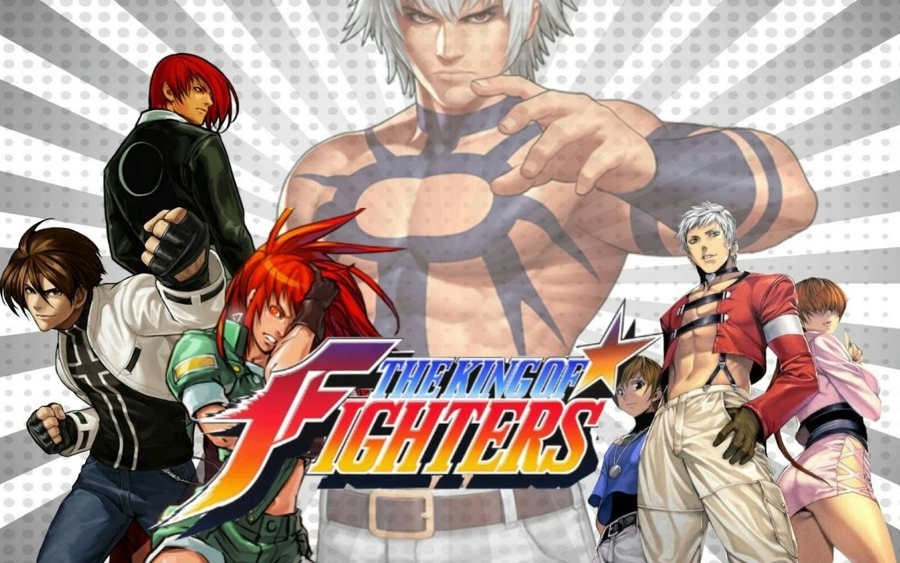
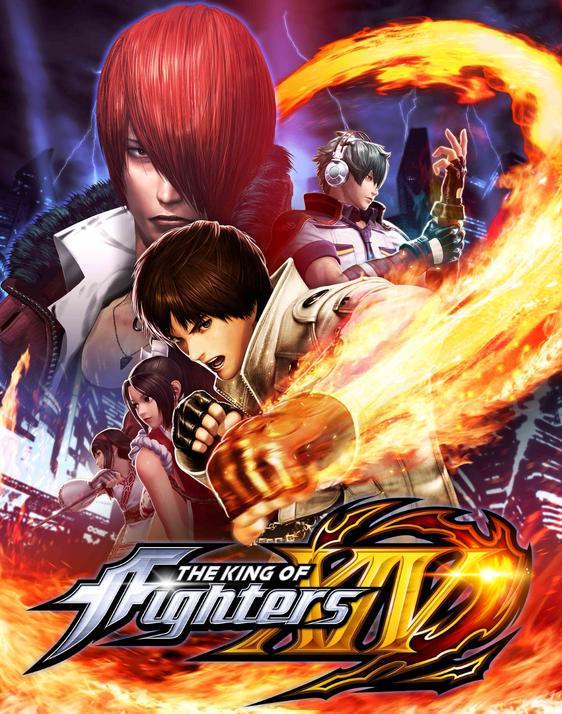

The King of Fighters, abreviada KOF, y traducida como El rey de los luchadores, es una saga de videojuegos de lucha inicialmente para el sistema Neo Geo desarrollada por la compañía SNK.
El primer juego de la serie, The King Of Fighters, fue The King Of Fighters '94. El juego originalmente había sido diseñado para ser un combate de ensueño de personajes de varios títulos previos de la compañía, particularmente Fatal Fury (conocido en Japón como Garou Densets), Art of Fighting, Ikari Warriors, Psycho Soldier, etc. El éxito del juego llevó a SNK a lanzar ediciones anuales del juego y nombrarlos según el año en el que salían. En 2004, SNK abandonó los lanzamientos anuales del juego y empezó a numerarlos de una manera más tradicional; el primer juego en ser lanzado de esta manera fue The King of Fighters XI. En 2004, SNK produjo el primer juego en 3D de la serie, KOF: Maximum Impact. El productor de la serie Maximum Impact, Falcoon, estableció que estos juegos pertenecen a una realidad diferente que los juegos de la serie original (a pesar de que en Norteamérica, el primer Maximum Impact fue renombrado a The King of Fighters 2006)
